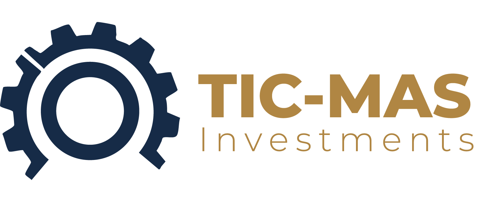
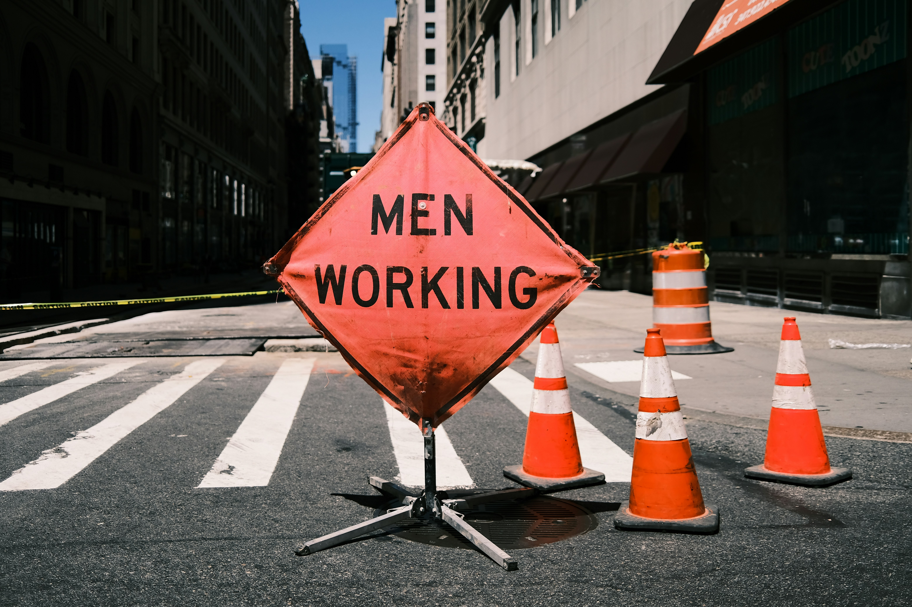

Building Botswana's infrastructure with excellence and reliability

TIC-MAS Investments (Pty) Ltd
A premier 100% citizen-owned civil engineering and infrastructure development partner for Botswana's mining, industrial, and construction sectors.
1. Executive Summary
TIC-MAS Investments is a Botswana-based civil engineering and infrastructure development company focused on delivering robust, efficient, and safe solutions. We specialise in earthworks, road construction, and maintenance services that are critical for mining and industrial operations.
With a modern fleet of machinery and a highly skilled Batswana workforce, we support mining operations, ensure seamless logistics, and maintain site infrastructure to the highest standards.
2. Company Details & Regulatory Compliance
Company registered with CIPA under the Botswana Companies Act.
- Ownership: 100% Citizen Owned
- B-BBEE Status: Level 1 Contributor
- PPADB / PPRA Registration: Pre-qualified in key categories for government tenders
- Key Certifications: Compliant with safety, health, and environmental standards, and committed to international best practices including ISO 9001 quality management.
3. Core Service Offerings for the Mining Industry
- Heavy Civil & Earthworks: Bulk earthmoving, pad construction for plants and buildings, drainage structures, and excavation.
- Haul Road & Access Road Construction: Design, construction, and maintenance of durable haul roads to ensure safe, efficient vehicle movement.
- Road Maintenance & Resurfacing: Regular grading, re-gravelling, and surfacing to keep roads operational in all weather conditions.
- Site Infrastructure & Ancillary Works: Fencing, security perimeters, guard rails, kerbing, and signage.
4. Management & Human Capital
Under the leadership of Mr. Olatlhile Lux Makakane as Managing Director and Walter Johnson as Chief Marketing Officer, TIC-MAS fosters a culture of excellence and safety.
Our team includes experienced civil engineers, project managers, plant operators, site agents, foremen, drivers, ground personnel, and a dedicated SHEQ (Safety, Health, Environment, and Quality) team.
We invest heavily in continuous training to keep our workforce proficient with the latest industry techniques and safety protocols.
5. Additional Services
- Bush Clearing & Land Preparation: Site clearing, destumping, and preparation for exploration or expansion projects.
- Plant Hire: Heavy equipment hire with expert operators, including motor graders for precision road maintenance.
- Building Construction Services: Turn-key construction for mining sites and industrial facilities, from foundations and structural steelwork to full commercial and industrial builds.